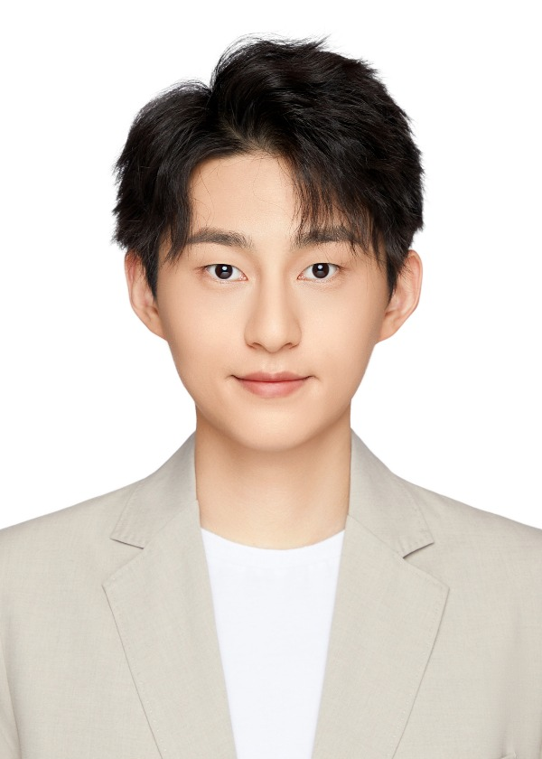
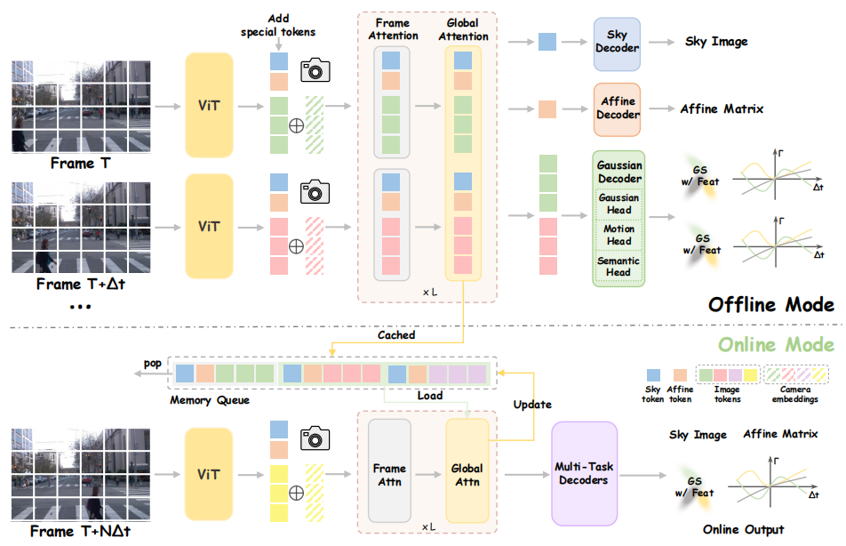
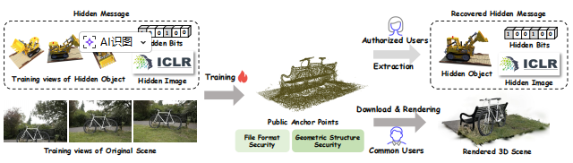
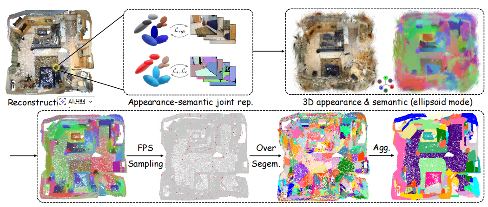
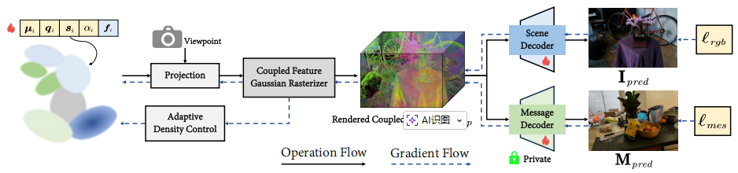
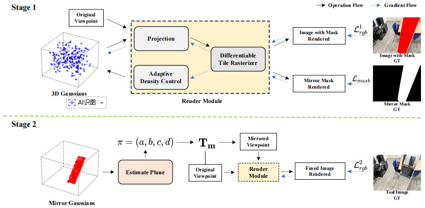
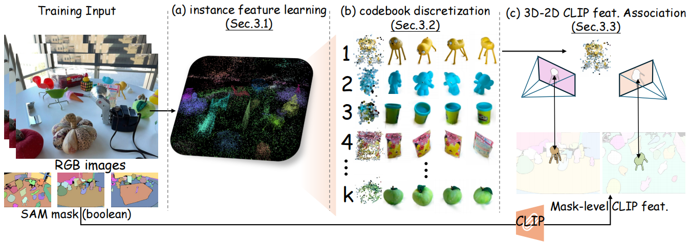
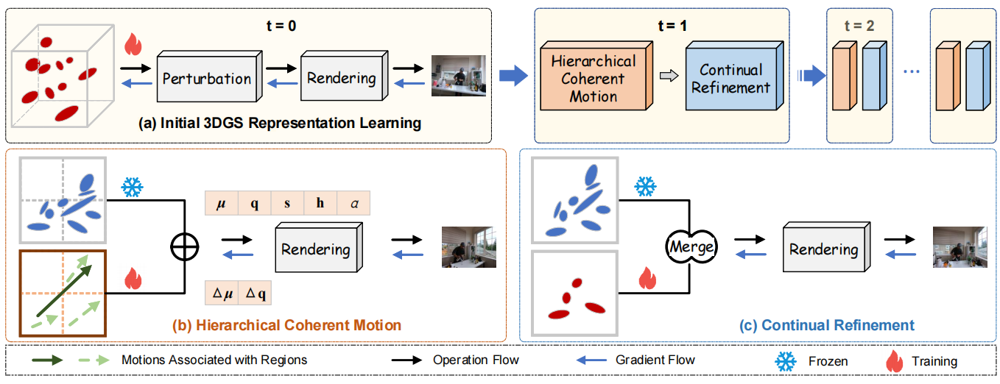

|
Jiarui Meng （孟佳锐）
I am currently an AI Engineer at Huawei. I received my Master's degree in Computer Applied Technology from Peking University, where I was advised by
Prof. Jian Zhang and
Prof. Siwei Ma.
Prior to that, I obtained my Bachelor's degree from Harbin Institute of Technology.
I am interested in 3D Reconstruction, 3D Vision and 3D-LLMs.
Email /
Scholar
|

|
|

|
SLARM: Streaming and Language-Aligned Reconstruction Model for Dynamic Scenes
[Equal Contribution] Zhicheng Qiu*, Jiarui Meng*, Tong-an Luo*, Yican Huang, Xuan Feng, Xuanfu Li, ZHan Xu
CVPR, 2026,
Highlight.
Paper
We propose SLARM, a feed-forward model that unifies dynamic scene reconstruction, semantic understanding, and real-time streaming inference. SLARM captures complex, non-uniform motion through higher-order motion modeling, trained solely on differentiable renderings without any flow supervision.
|
|

|
SecureGS: Boosting the Security and Fidelity of 3D Gaussian Splatting Steganography
[Equal Contribution] Xuanyu Zhang*, Jiarui Meng*, Zhipei Xu, Shuzhou Yang, Yanmin Wu, Ronggang Wang, Jian Zhang
ICLR, 2025.
Paper
We propose SecureGS, a secure and efficient 3DGS steganography framework inspired by Scaffold-GS's anchor point design and neural decoding. SecureGS uses a hybrid decoupled Gaussian encryption mechanism to embed offsets, scales, rotations, and RGB attributes of the hidden 3D Gaussian points in anchor point features, retrievable only by authorized users through privacy-preserving neural networks.
|
|

|
InstanceGaussian: Appearance-Semantic Joint Gaussian Representation for 3D Instance-Level Perception
Haijie Li, Yanmin Wu, Jiarui Meng, Qiankun Gao, Zhiyao Zhang, Ronggang Wang, Jian Zhang
CVPR, 2025.
Paper
We propose InstanceGaussian, a novel 3D scene understanding approach that jointly learns appearance and semantic features through a semantic-scaffold Gaussian representation, progressive joint training, and bottom-up instance aggregation, achieving state-of-the-art performance in category-agnostic open-vocabulary 3D point-level segmentation.
|
|

|
GS-Hider: Hiding Messages into 3D Gaussian Splatting
[Equal Contribution] Xuanyu Zhang*, Jiarui Meng*, Runyi Li, Zhipei Xu, Yongbing Zhang, Jian Zhang
NeurIPS, 2024.
Paper
To address the security challenges in 3D Gaussian Splatting, we propose GS-Hider, a novel steganography framework that invisibly embeds multimodal messages into point clouds via coupled secured features, achieving high fidelity, robustness, and security without compromising rendering quality.
|
|

|
Mirror-3DGS: Incorporating Mirror Reflections into 3D Gaussian Splatting
Jiarui Meng, Haijie Li, Yanmin Wu, Qiankun Gao, Shuzhou Yang, Jian Zhang, Siwei Ma
VCIP, 2024, Oral.
Paper
We introduce Mirror-3DGS, a novel framework that integrates mirror attributes and plane imaging principles into 3D Gaussian Splatting to accurately model physical reflections, achieving superior real-time rendering fidelity in mirror regions compared to state-of-the-art methods.
|
|

|
OpenGaussian: Towards Point-Level 3D Gaussian-based Open Vocabulary Understanding
Yanmin Wu, Jiarui Meng, Haijie Li, Chenming Wu, Yahao Shi, Xinhua Cheng, Chen Zhao, Haocheng Feng, Errui Ding, Jingdong Wang, Jian Zhang
NeurIPS, 2024.
Paper
This paper introduces OpenGaussian, a method for 3D Gaussian Splatting that achieves robust 3D point-level open vocabulary understanding by training instance features with 3D consistency, utilizing a two-stage codebook for discretization, and establishing instance-level 3D-2D feature associations.
|
|

|
HiCoM: Hierarchical Coherent Motion for Dynamic Streamable Scenes with 3D Gaussian Splatting
Qiankun Gao, Jiarui Meng, Chengxiang Wen, Jie Chen, Jian Zhang
NeurIPS, 2024.
Paper
We propose HiCoM, an efficient framework for dynamic scene reconstruction that leverages a compact 3D Gaussian Splatting representation and a Hierarchical Coherent Motion mechanism to achieve superior training speed, reduced storage, and robust real-time rendering performance.
|
-
Alibaba-Amap, Beijing, China. June 2024 - Sept 2024.
Research Internship, focusing on 3D Reconstruction.
Mentor: Mingchao Sun
|
{kind=link}